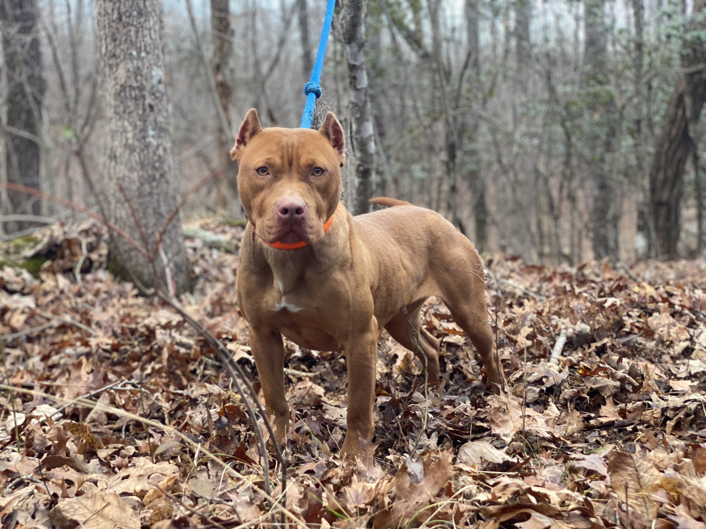
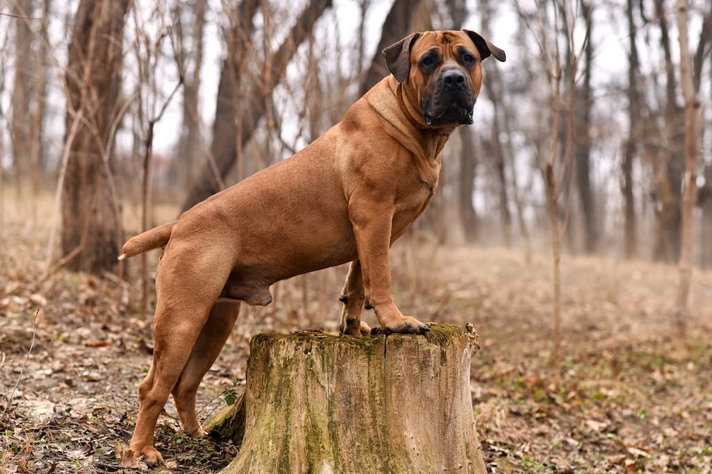
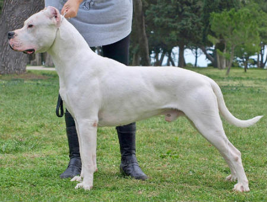
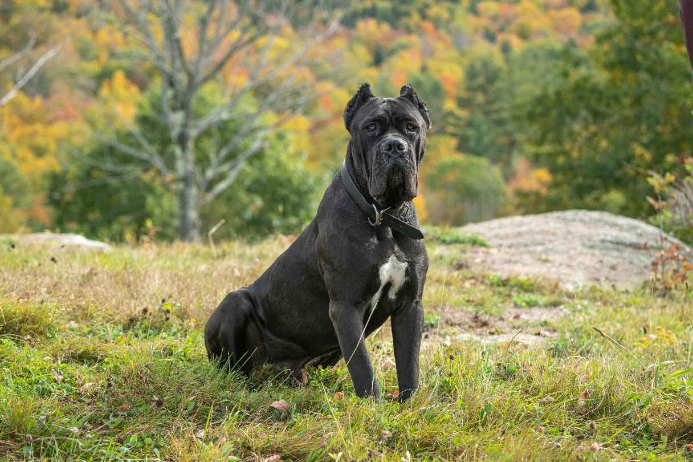

This dog breed is called a American pit bull terrier.
The American Pit Bull Terrier is a medium sized dog ranging from 30-60 pounds.

This dog breed is called a Staffordshire Bull Terrier.
The Staffordshire Bull Terrier is a medium sized dog ranging from 28-40 pounds.

This dog breed is called an American bully.
The American Bully can be quite different based on type of American Bully you aquire, this dog ranges from 40-120+ pounds.

This dog breed is called a Camalot "Pit".
The Camalot "Pit". A dog ranging in size much like the American Bully from 40-80 pounds. .

This dog breed is called a Borbole.
The Borbole is a large dog ranging from 150-200 pounds.

This dog breed is called a Dogo Argotino.
The Dogo Argotino is a large dog ranging from 80-100 pounds.

This dog breed is called a Cane Corse.
The Cane Corse is a large dog ranging from 80-110 pounds.